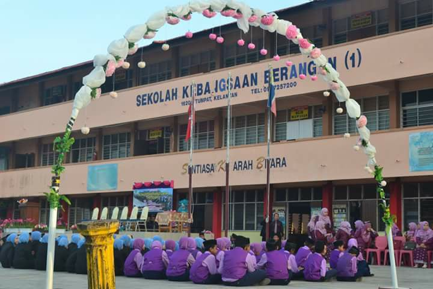
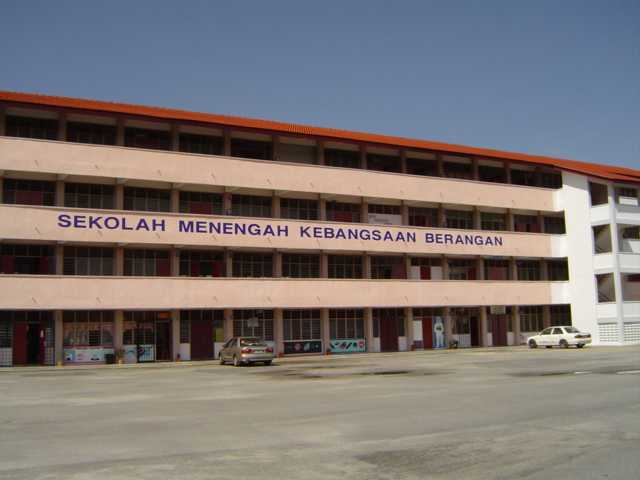

PRIMARY SCHOOL
 I started my education at primary school which is Sekolah Kebangsaan Berangan 1. Then I studied in secondary school at Sekolah Menengah Kebangsaan Berangan and I also got 7A in SPM. Next, I further my study in STPM at Sekolah Menengah Kebangsaan Tumpat. For this time, my result for the first semester was 3.25, second semester it was 3.75, third semester I got 3.63 and in the whole result, I got 3.83. Now, I continue my study at UiTM Machang as a student of Bachelor in Information Science (Honours) Information System Management>
SECONDARY SCHOOL
 I started my education at primary school which is Sekolah Kebangsaan Berangan 1. Then I studied in secondary school at Sekolah Menengah Kebangsaan Berangan and I also got 7A in SPM. Next, I further my study in STPM at Sekolah Menengah Kebangsaan Tumpat. For this time, my result for the first semester was 3.25, second semester it was 3.75, third semester I got 3.63 and in the whole result, I got 3.83. Now, I continue my study at UiTM Machang as a student of Bachelor in Information Science (Honours) Information System Management>
HIGH SCHOOL
I started my education at primary school which is Sekolah Kebangsaan Berangan 1. Then I studied in secondary school at Sekolah Menengah Kebangsaan Berangan and I also got 7A in SPM. Next, I further my study in STPM at Sekolah Menengah Kebangsaan Tumpat. For this time, my result for the first semester was 3.25, second semester it was 3.75, third semester I got 3.63 and in the whole result, I got 3.83. Now, I continue my study at UiTM Machang as a student of Bachelor in Information Science (Honours) Information System Management>
DEGREE

I started my education at primary school which is Sekolah Kebangsaan Berangan 1. Then I studied in secondary school at Sekolah Menengah Kebangsaan Berangan and I also got 7A in SPM. Next, I further my study in STPM at Sekolah Menengah Kebangsaan Tumpat. For this time, my result for the first semester was 3.25, second semester it was 3.75, third semester I got 3.63 and in the whole result, I got 3.83. Now, I continue my study at UiTM Machang as a student of Bachelor in Information Science (Honours) Information System Management>